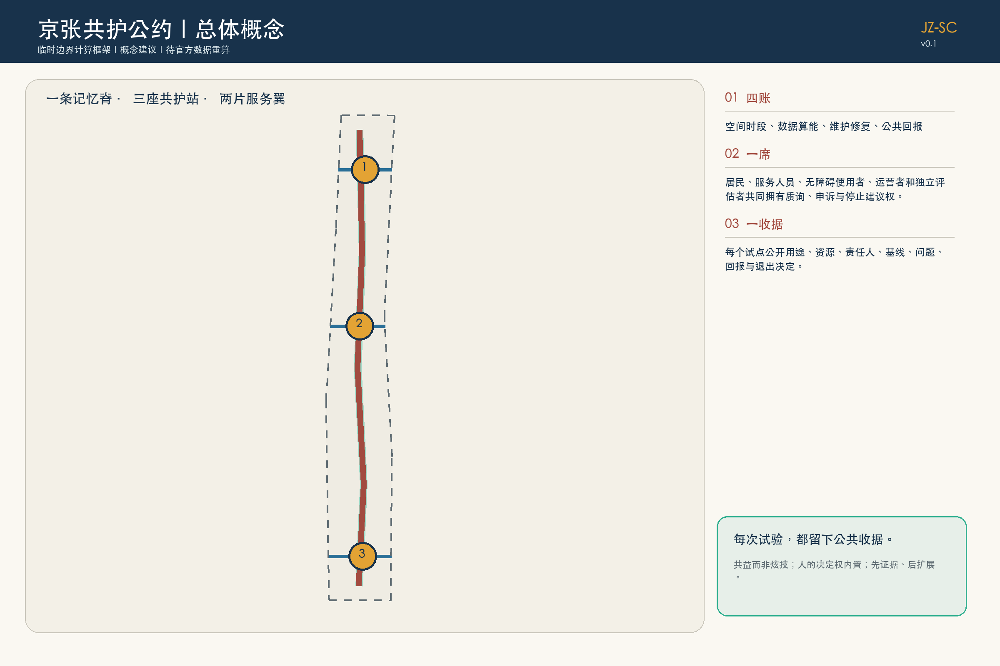
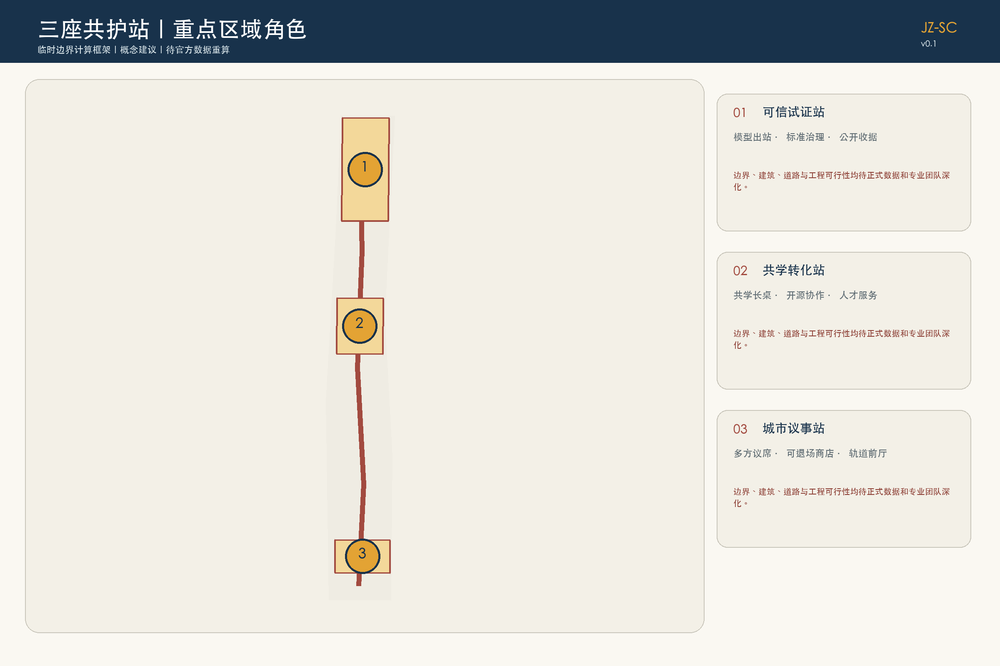
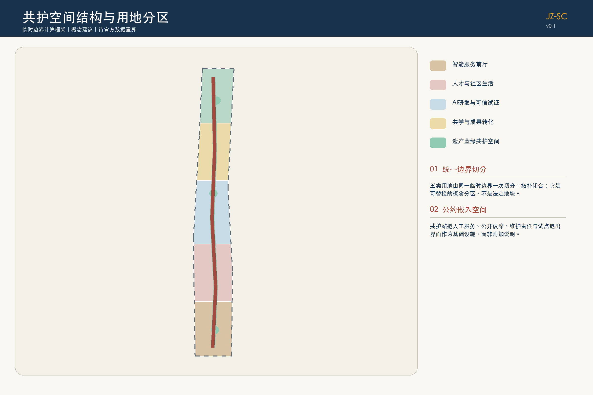
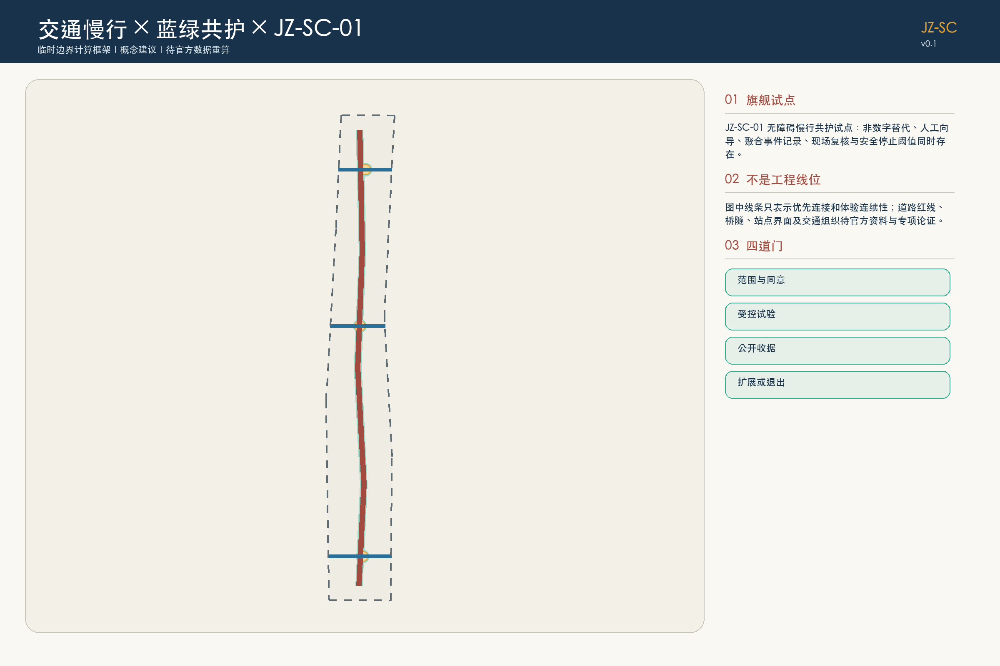
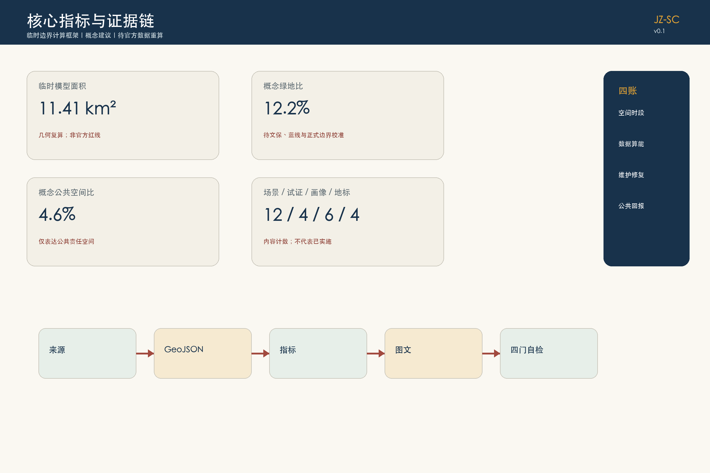

统筹研究范围
研究产业、服务和治理协同，不据临时图形给出精确线位。
每次试验，都留下公共收据。
临时边界计算框架 · 内容评审候选 · 非官方规划
不是另一条科技展示环，而是一份把公共资源占用、人的决定权、维护责任和公共回报写进空间的可核查公约。

研究产业、服务和治理协同，不据临时图形给出精确线位。
以可替换的概念分区、公共责任空间和条件门表达更新方法。
三座共护站分别验证可信试证、公共议事和可退场日常服务。


空间时段、数据算能、维护修复、公共回报。
多方议席公开冲突、申诉、复核和停止建议。
每个试点保留版本化公共收据，记录成功、失败与退出。


图像由 AI 生成，用于说明无障碍、人工服务、遗产轨迹与蓝绿空间关系；不代表现状、公众意见或已批准建设。
建筑几何是空间类型原型；因缺少现状、权属和控规资料，不作地块级拆改留、建筑规模或高度结论。
补齐资料、遗产与无障碍核查；先用可撤介入。
在获得许可的适宜空间中测试服务与公共议席。
专业评估后开展适应性更新和受控验证。
只有公共回报、运营和专业审查充分时才考虑常态化。
可信模型出站口、慢速共行段、多智能体城市沙盘、可退场智能店。统一经过范围与同意、受控试验、公开收据、扩展或退出四道门。
老年邻里、行动或感官障碍通勤者、学生与开源开发者、国际初创产品负责人、小微商户、公共空间养护者/社区工作者。

公告任务与 agent.1-agent.6 共 23 项要求均由任务覆盖矩阵连接到章节、几何、指标、图纸、可视化、来源、假设和自检项。
本页面不自行声称审查通过。最终权威状态由提交包中的 self_check.json 记录，并由受信任 CI 或维护者复跑验证。
主要依据包括官方公告、已清权智能体任务书、城市设计/控规/用地分类本地标准快照，以及六个官方国际案例页面。完整用途与许可边界见 sources.json。